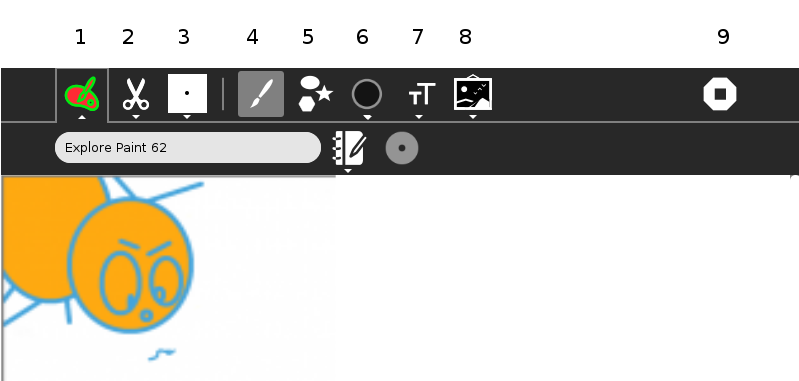
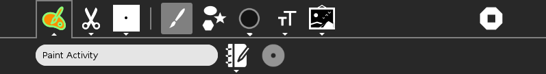
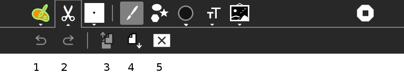
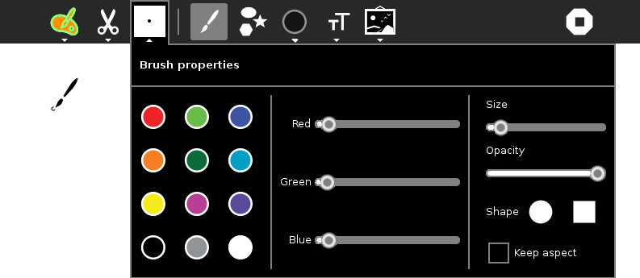
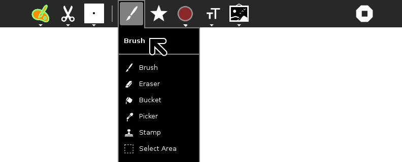
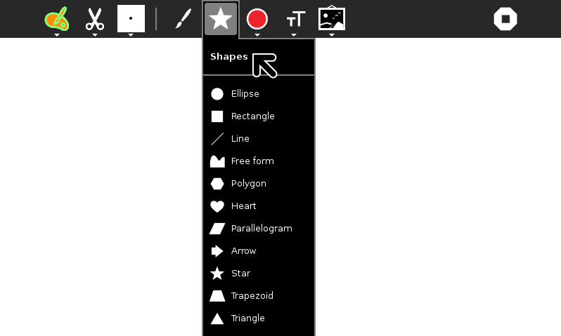
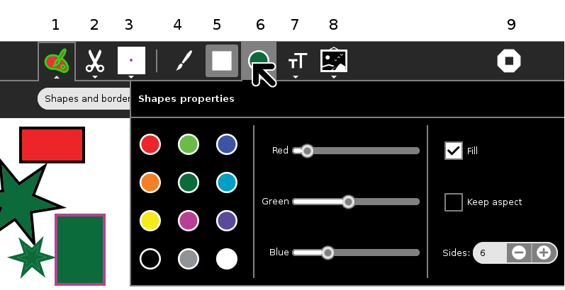
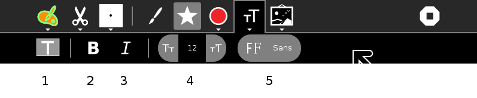
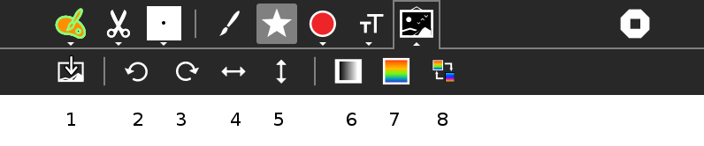

Paint¶
About¶
This Activity allows users to create paintings or drawings. It can also be used to edit images created by other Activities and the images it creates can be imported into some Activities.
Using¶
You can start a new project by selecting Start new from the Home View or open an existing Paint project in the Journal. By default, when you click on Paint in Home View, you will resume your last project.
Paint main tool bar¶

The tool bar top row contains buttons to open each of the following tabs.
Activity tab. The Activity tab is open, and the project has been given a name.
Edit tab.
Brush properties.
Brush.
Shapes.
Shapes properties.
Text tab.
Images Tab.
Stop, or close Activity.
Explanation of tabs or tool bars in more detail.
The Activity tab¶

Activity tab. In the first field name the page or project. The Description button, the “pencil and book” icon, allows you to add a description to the Journal entry. Try to get in the habit of re-naming the project before you start work. Move the cursor over the existing title, click the left mouse button, and start typing a name for the project. Your new name will overwrite the original.
The collaboration button is grayed out, see Sharing.
Edit tab¶

Undo button.
Redo button.
Copy button. This will copy the area selected with the Select Area tool to the clipboard. The Select Area tool is the bottom item of the Brush tool bar.
Use the Select Area tool to crop images, select the area you want, and use the Copy button to copy the clipping to the Clipboard. The Clipboard feature is within the Frame in the lower left corner of the screen.
To save from the Clipboard, click on the clipping on the Frame, and then select ‘Keep’ on the menu, which appears. The original image is unchanged and a new Image clipping item is saved in the Journal.
To retieve from the Clipboard use the Paste button:
Paste button. The copied image, which you pick up as an Image clipping from the Frame, is pasted in the top left of the work space, and it is already selected, that is under the control of the Select Area tool, with which you drag the clipping to the desired place.
Clear the work space, or clear the selected area if there is an area selected.
Brush properties¶

Changes the color, and other properties of the Brush tools, Brush, Bucket, and Stamp.
When the stamp tool is selected, Brush properties changes to Stamp properties and it controls the size of the stamp.
Brush¶

Brush. Spreads color as you move the cursor over the work space.
Eraser. Removes color.
Bucket. This will flood, or fill, an enclosed area with color.
Picker. Use this tool to pick up a certain color from the image on the work space. This colour is then used by Brush, Bucket, or Stamp.
Stamp. Stamp will repeat a part of the image selected in Select Area.
Select Area. A rectangular area is selected by placing the curson at top left of desired area, click left mouse button, draw cursor to bottom right, and release the mouse button.
Shapes¶

Elipse (hold down shift for circle).
Rectangle (hold down shift for squares).
Line.
Free form.
Polygon (number of sides set in Shapes properties).
Heart.
Parallelogram.
Arrow.
Star (number of points is set in Shapes properties).
Trapezoid.
Triangle.
Shapes Properties¶

The color of Shapes Fill is set here, while the color of the border is set in Brush properties. If the Fill box is unchecked, only an outline, or border, is displayed.
Under the Fill checkbox, set aspect ratio, and the number of sides of stars and polygons.
TextTab¶

Type. To insert text, press Type, move the cursor to the point you want to start typing, click, and insert text with the keyboard. The colour used is set in Brush properties.
Bold switch.
Italic switch.
Increase or decrease font size.
Select font.
Images Tab¶

Insert picture, opens Journal or attached media in Image search.
Rotate selected area left.
Rotate selected area right.
Horizontal mirror, or flip, selected area.
Vertical mirror, or flip, selected area.
Convert selected area from color to gray.
Rainbow.
Invert colors in the selected area. For example black is inverted to white, and similarly, all colors are inverted.
Applying¶
Paint is a versatile Activity with many uses such as:
creating drawings or paintings.
creating images for inserting into Write documents.
creating slides for a Portfolio Activity slide show.
creating images for using in other Activities including Turtle Blocks and many more.
editing and cropping images made by other Activities including Turtle Blocks and many more..
editing and cropping screen shots (take screen shots from the keyboard by pressing the Alt key with 1).
editing and cropping photos taken with the Record Activity.
Sharing¶
Paint does not support sharing. You can use Turtle Blocks for collaborative drawing.
You can share the work you have done in Image Viewer.
 For further information, please see the page Collaborating
For further information, please see the page Collaborating
Extending¶
take a photo of an animal with Record, crop the image with Paint, use as a custom turtle in Turtle Blocks.
start a school newspaper, take photos with Record, crop with Paint, import them into Write.
do a portfolio of your schoolwork, get screenshots (Alt-1) crop with Paint and add explanatory labels then make a slideshow in Portfolio Activity.
create a custom Memorize Activity game, create the images in Paint.
create custom cards for the Dimensions (Visual Match) Activity.
create custom foods for the Nutrition Activity.
create custom images for the Labyrinth Activity. Labyrinth is a mind mapping tool.
create a web page with images from Paint.
take photos of plants or animals, crop the photos, and label them.
take the output of SimpleGraph and use the Bucket (flood-fill tool) to make a multicolored graph.
Developers’ information¶
History
Oficina (the Paint Activity) was developed and adapted to the XO using Python for the team NATE-LSI (Integrated Systems Laboratory), in the Polytechnical School at University of São Paulo, Brazil.
Resources
Where to report problems¶
In http://bugs.sugarlabs.org, component Paint.